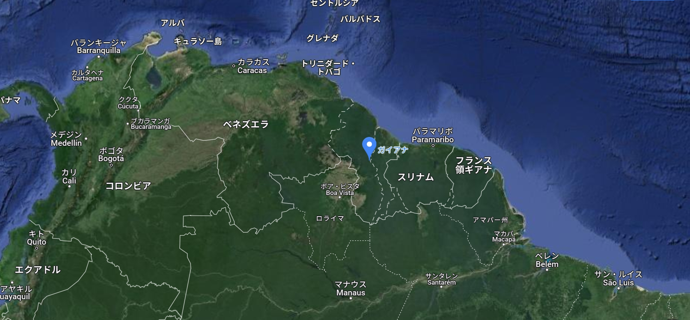
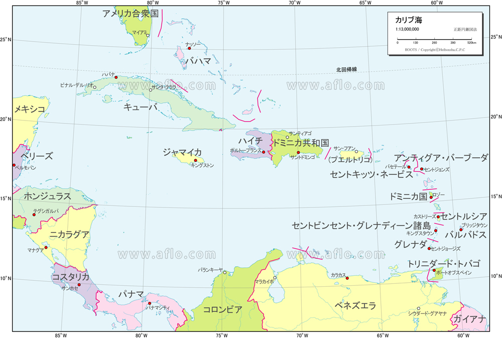
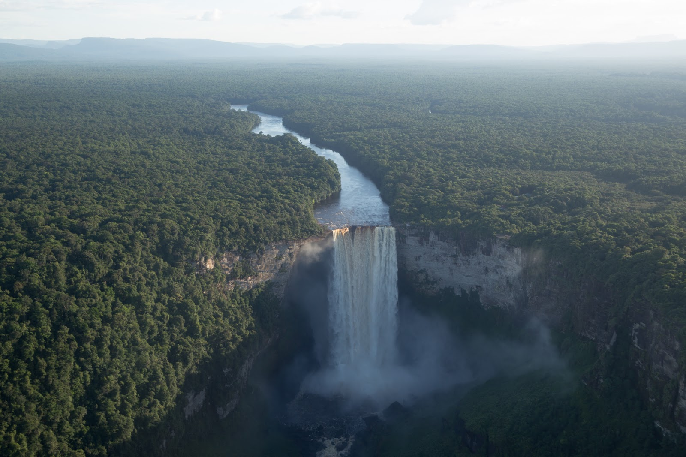
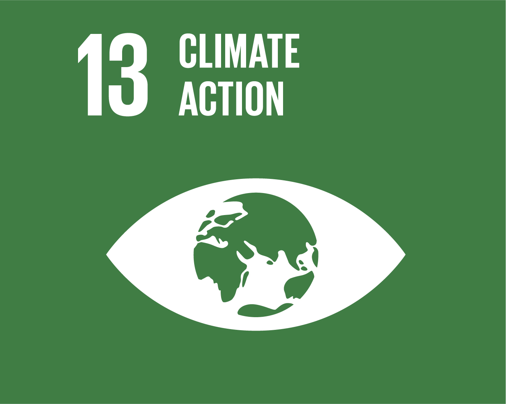
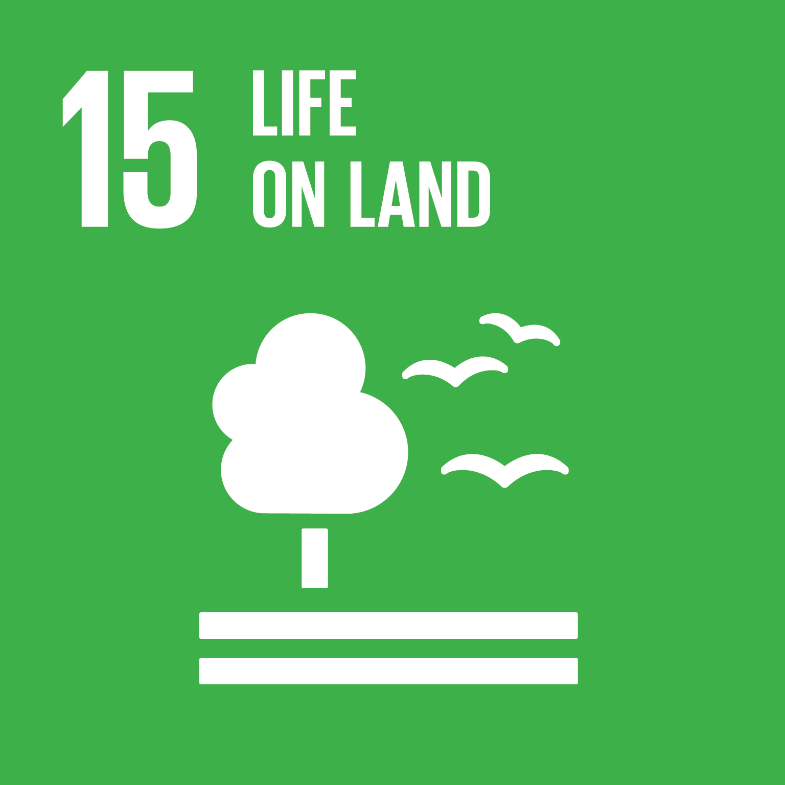

ガイアナは南アメリカ大陸の北東部に位置しています。具体的には、大西洋に面し、ブラジル、スリナム、ベネズエラと国境を接しています。地理的にはアマゾン盆地の北部に位置し、国土の大部分が熱帯雨林に覆われています。主要な都市としては、ジョージタウンがあります。
地形 ガイアナは主に熱帯雨林とサバンナで覆われており、南部には山岳地帯もあります。 気候 ガイアナの気候は熱帯性で、高温多湿です。年間を通じて降水量が多く、5月から8月が雨季です。 文化 ガイアナの文化は多様で、主にインディアン、アフリカ系、インド系の民族が暮らしており、それぞれが独自の伝統と言語を持っています。

ガイアナの自然環境は豊かで多様であり、地元のコミュニティにとって重要な資源源です。主に鉱業、農業、林業などが経済の中心であり、同時に生態系の保護も不可欠です。熱帯雨林やその他の生態系は地球の気候調整に寄与し、文化的な伝統とも深く結びついています。
ガイアナはカリブ海に面しており、カリブ諸国とは地理的な近接から親しい関係があります。文化的な交流や経済的なつながりが存在しています。また、カリブ共同体（CARICOM）のメンバー国でもあり、地域統合の一環として協力しています。
ガイアナは自然資源に恵まれた国で、豊富な熱帯雨林と鉱物資源を有しています。特に、カイエトゥールの滝は金鉱の豊富な地域として知られており、経済の重要な柱となっています。
ガイアナは特に気候変動への脆弱性が高く、SDG 13（気候変動対策）に向けた取り組みが重要です。また、SDG 15（陸上生態系の保護・回復）においても、熱帯雨林の持続的な管理と保護が課題とされています。
 